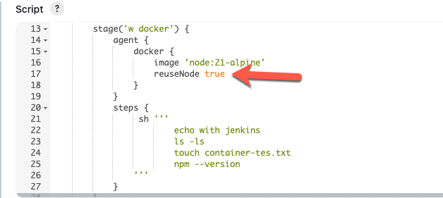

Docker
Pre-conditions to install
Docker commands with docker files to configure images
-
Build docker img
docker build -t imgName .
-
Start the sever
docker compose up -d
-
Down the sever
docker compose down
For troubleshooting while installing jenkins pluggins inside a docker
container
-
After installing pluggins in jenkisn like docker pipeline or nodeJs
- Open and run your docker image in docker desktop
- Go to container section
- Select the container options
- Open with vs code
-

- Open visual code and execute
- Make sure that containers were removed from docker desktop
- Make sure that you container files were restored